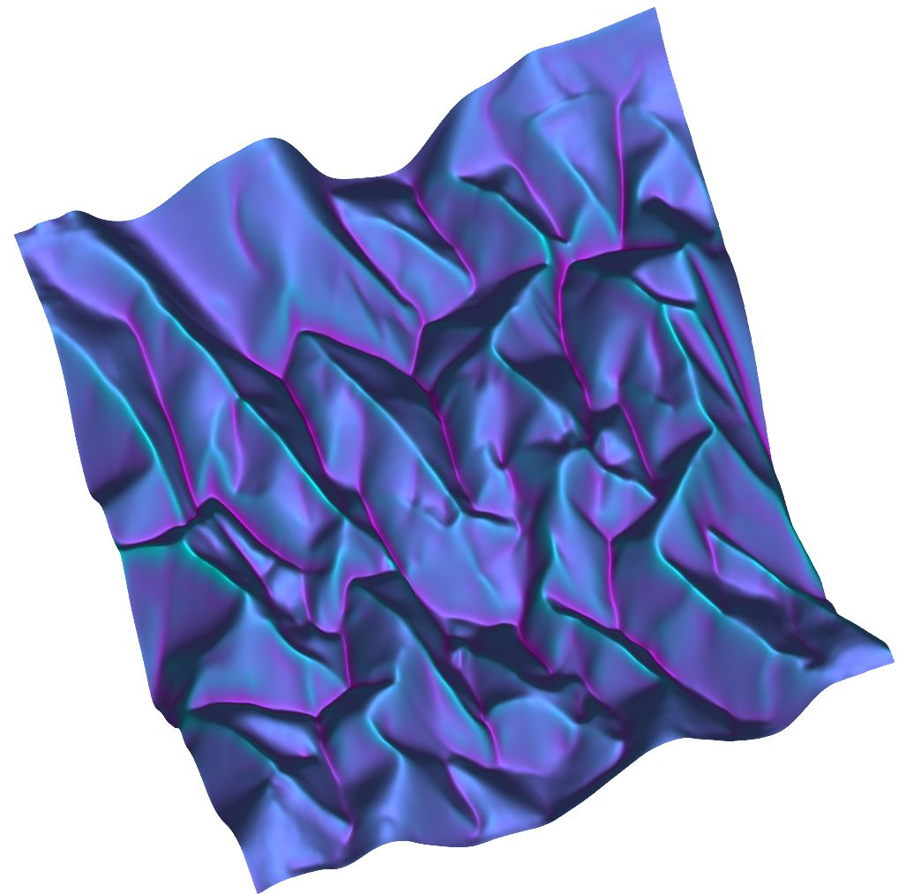
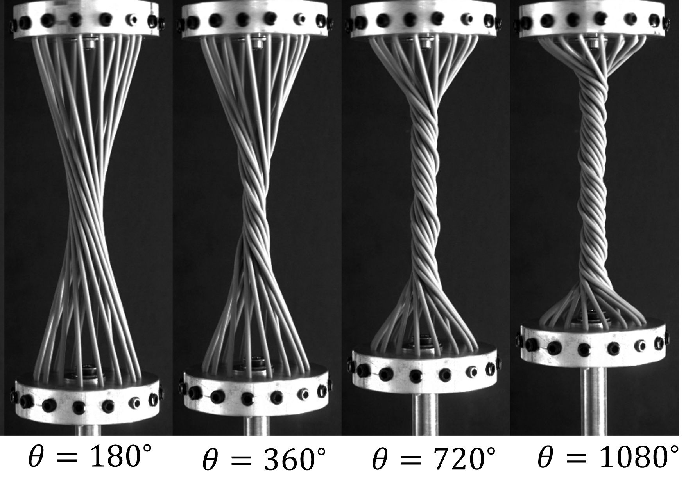
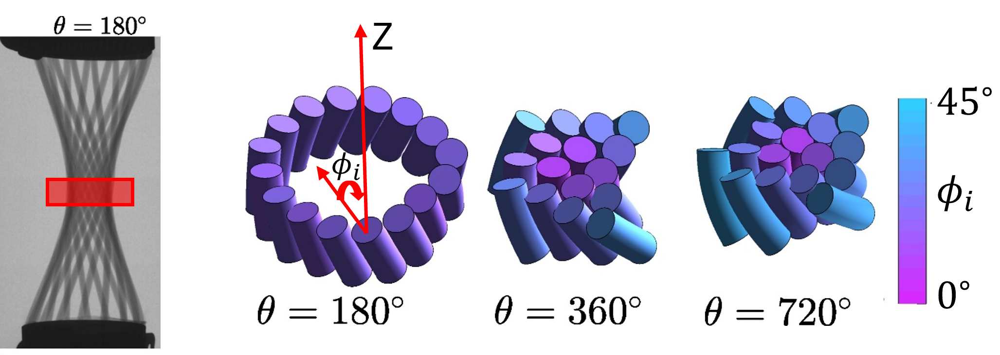
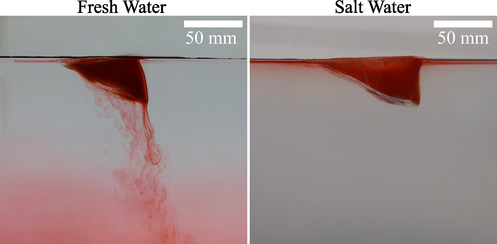

Research Overview
My research explores how geometry and mechanical driving govern structural evolution, memory, and collective behavior in physical systems driven far from equilibrium. I combine experiment and simulation to study soft and structured materials across multiple length scales.
My Ongoing Research: architected granular metamaterials for impact mitigation
I am developing architected granular systems in which geometric design is used to control force transmission and energy dissipation under impact loading. The structures are designed using CAD (Fusion 360) and prototyped using lab‑based 3D printing facilities (Form-4).
The work combines custom impact experiments with discrete element method (DEM) simulations in LAMMPS to study force transmission, dissipation pathways, and the role of geometric architecture in shaping collective mechanical response. Experimental and numerical results are currently being synthesized into a manuscript.
[Representative figures will be added upon publication.]
This work was presented at the APS March Meeting 2026 , providing early community feedback on the experimental design and physical interpretation.
My PhD Research Projects
Below are selected research projects developed during my PhD.
1. Crumpling: Memory in Thin Sheets
Published in PRR (2024): Memory in cyclically crumpled sheets
In this project, I study how thin flexible sheets respond when repeatedly twisted. We use Mylar sheets rolled into a cylinder that are clamped along opposite edges and apply controlled twisting cycles allowing one end to translate freely along the frictionless linear guide. As the sheet is twisted and untwisted multiple times, it develops a complex network of ridges and valleys.
.png)

Figure 1: Overview of the twisting and profilometry setup

Figure 2: Twisting under progress (Click to watch the video)

Figure 3: After twist
Figure 4: Laser Profilometer Schematic

Figure 5: 3D reconstructed surface obtained from laser‑sheet profilometry
At first, the deformations are highly random, but after many cycles, the sheet begins to form repeatable patterns in the same regions — indicating that the sheet "remembers" its past deformations. We quantify this memory effect by measuring the curvature field and the total crease length using laser profilometry and track how these quantities evolve over hundreds of twisting cycles.
Our experiments show that the probability of ridge formation shifts from random locations to specific preferred sites as cycling continues, revealing the gradual encoding of mechanical memory into the sheet’s structure. This research helps us understand how disorder and memory emerge in crumpled materials, and may have broader implications for understanding memory formation in soft disordered systems and the design of materials with programmable properties.
Twist crumpling under progress. The laser cross-section helps to track the relative surface deformation after each crumpling cycle.
2. Bundling Architecture of Elastic Filaments Under Twist
Published in PRE (2025) [Editors' Suggestion]: Bundling architecture in elastic filaments with applied twist
When multiple filaments are twisted together, they form complex bundled structures whose architecture depends on the interplay between elasticity, geometry, and applied twist. In this study, we experimentally and theoretically investigate how initially parallel elastic filaments spontaneously rearrange into ordered bundles under axial twisting and eventually become disordered. The filaments exhibit radial migration, resulting in an emergent internal structure that balances stretching, bending, twisting, and contact energy. Our results provide new insights into the mechanics of natural and engineered fiber assemblies, with implications for materials design, biology, and soft matter physics.

Figure 5:Filament bundles undergo radial instability under axial twist (Click to watch the video)

Figure 6: The mid-section of the bundle from X-ray images is integrated and rendered. The colorbar shows the inclination angle of the filaments relative to the vertical line parallel to the axis of twist.
Twist induced bundling of soft filaments (n=16).
3. Self-propulsion of floating ice blocks caused by melting
Published in PRF (2026): Self-propulsion of floating ice blocks caused by melting
Featured by : APS Physics — “Melting Gives Ice Block a Push”
Highlighted by : Condensed Matter Journal Club (CMJClub) — “When active matter becomes its own fuel”
We demonstrate that floating ice blocks melting in an otherwise quiescent fluid can spontaneously self-propel due to asymmetric flow fields generated at the ice–water interface. The motion arises without external forcing and is governed by the coupling between melting, buoyancy, and fluid–solid interactions.

Figure: Evidence of meltwater flow visualized using red dye. In fresh water, dense meltwater descends beneath the ice block, forming sinking plumes. In salt water, the lighter meltwater rises and spreads near the free surface. These contrasting flow patterns are central to the propulsion mechanism in fresh water Vs saline water. (Click to watch the video)
Using complementary dye visualization and shadowgraph imaging, we directly track the meltwater released from the ice surface. In fresh water, the cooled meltwater remains attached to the block as downward plumes. In salt water, however, the density contrast reverses and meltwater rises, while cooling of the surrounding bath generates a detached convective flow beneath the block.
These observations show that propulsion is dominated by convection driven by bath cooling, rather than meltwater buoyancy alone. The resulting thrust is sufficient to sustain directed motion of the ice block in both fresh and saline environments.
This work provides a minimal physical framework for understanding the motion of melting bodies in stratified fluids, with implications for iceberg drift and phase‑change‑driven propulsion in fluid–solid systems.
Clark University research news: “Why Do Traveling Icebergs Speed Up in Warmer Ocean Waters?”